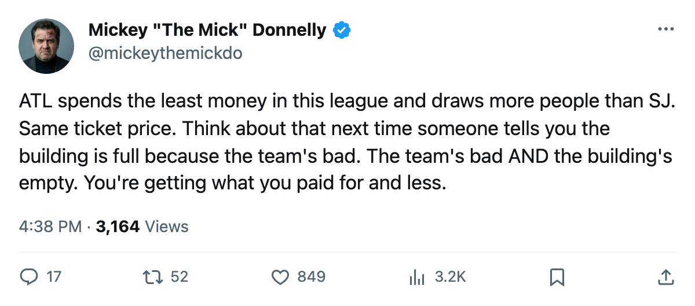
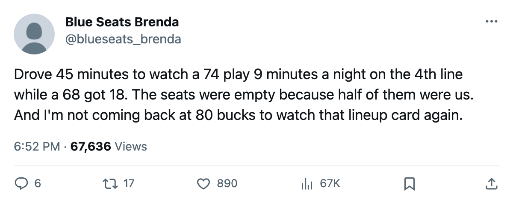

COL
COLYOUR $66.24M BUYS 13,557 BODIES AND A 74 ON THE 4TH LINE
San Jose spends like a contender, draws like a ghost town, and buries its own best player on the fourth line. The math is ugly and nobody in the front office is losing sleep.
 Mickey "The Mick" DonnellyColumnist, ex-goalie · The Penalty Box
Mickey "The Mick" DonnellyColumnist, ex-goalie · The Penalty Box
The piece
The  San Jose Sharks have the 4th highest payroll in this league. $66.24M. They sit tied with Colorado, $26M clear of Atlanta, and they draw 13,557 people to a $80 seat.
San Jose Sharks have the 4th highest payroll in this league. $66.24M. They sit tied with Colorado, $26M clear of Atlanta, and they draw 13,557 people to a $80 seat.
The cheapest roster in hockey belongs to the  Atlanta Thrashers, and guess how many bodies walk through their doors? 14,587. A thousand more than San Jose. Same ticket price. Half the payroll.
Atlanta Thrashers, and guess how many bodies walk through their doors? 14,587. A thousand more than San Jose. Same ticket price. Half the payroll.
| club | payroll | attendance | ticket | points | per point |
|---|---|---|---|---|---|
| SJ | $66.24M | 13,557 | $80 | 15 | $4.42M |
| COL | $66.24M | 14,603 | $82 | 18 | $3.68M |
| STL | $69.76M | 15,001 | $80 | 21 | $3.32M |
| ATL | $40.34M | 14,587 | $80 | 12 | $3.36M |
| PHX | $55.41M | 11,426 | $82 | 9 | $6.16M |
San Jose's per-point cost sits at $4.42M. Only Phoenix, Ottawa, and Chicago buy points more expensively. You are paying $80 to watch the 4th most expensive roster in the league produce a 15-point return in 14 games, and the building knows it. 13,557 is 4th worst in this entire league. The only clubs drawing fewer bodies are Phoenix, the Islanders, and Edmonton. You are in that company now.
The lineup card says what the coach thinks
 Alyn McCauley68 carries a 74 in the Bureau's Book. He skates L3C and K2C. He is a fourth-line center.
Alyn McCauley68 carries a 74 in the Bureau's Book. He skates L3C and K2C. He is a fourth-line center.  Tavis Hansen62 carries a 68. He skates L2RW. That is a six-point gap between the man the coach trusts on the second line and the man he buries on the fourth. The Bureau flagged it. The mis-slot table says exactly what I see: McCauley above Hansen at his position.
Tavis Hansen62 carries a 68. He skates L2RW. That is a six-point gap between the man the coach trusts on the second line and the man he buries on the fourth. The Bureau flagged it. The mis-slot table says exactly what I see: McCauley above Hansen at his position.
Colorado has the same payroll number and draws a thousand more people. Same money, more butts, and they put Serge Aubin73 at 73 on the third line over  Jim McKenzie64 at 64. At least the Avalanche are honest about who they trust.
Jim McKenzie64 at 64. At least the Avalanche are honest about who they trust.
The Morale Scale puts San Jose at 92.0, which is mid-pack and means nobody is crying. The front office makes $16.74M in profit. The owner is not losing sleep. Why would he? He is taking money out of a building where 13,557 people sit on $80 plastic chairs and watch a 74 play fourth-line minutes.
Reimer and his spreadsheet will tell you it's a small sample
14 games. Five wins, five losses, three overtime losses. Sure, small sample. I've heard it from every couch in this league since October 4. The payroll isn't small. The ticket price isn't small. The $4.42M per point isn't small. Those are the facts the coach and the GM have to look at when they sit down Monday and decide whether McCauley plays second-line minutes or continues rotting on a checking line while a 68 gets the real ice.
The cheapest team in the league fills its building better than you do. Colorado spends your money and draws a thousand more. Phoenix draws fewer than you, sure, but Phoenix spends $55.41M and nobody expects them to win. You're supposed to be a playoff team. You're $66.24M. Show up, people, and then show up, coaches.

